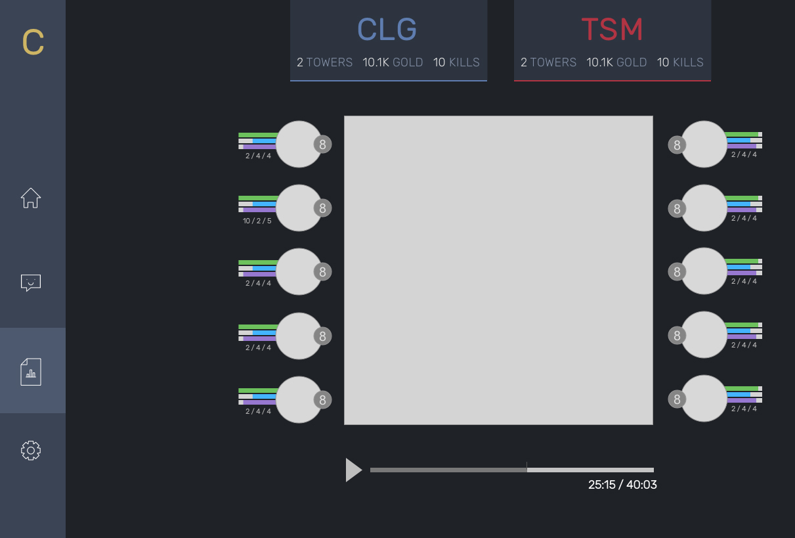
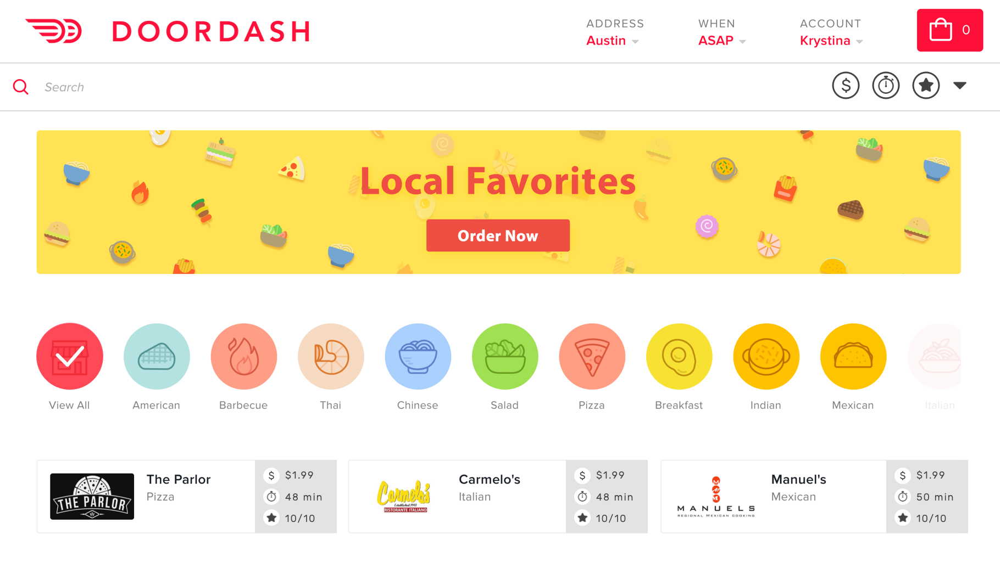
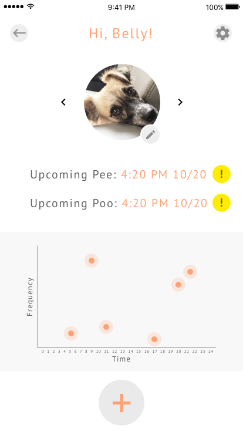
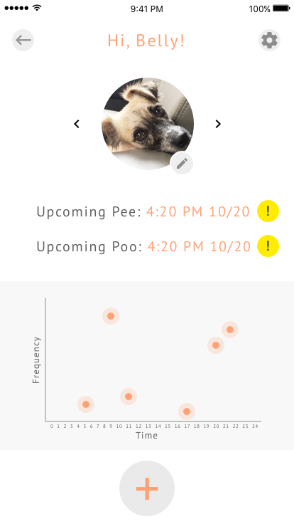
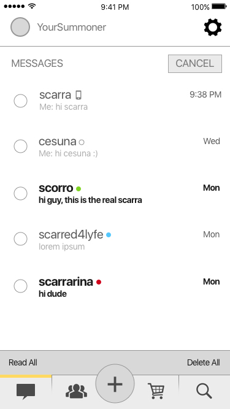

Climb is an analytics tool for professional League of Legends teams to better understand precise game data.
I serve as the sole designer on the team - defining style guides, creating detailed mockups, and making impactful design decisions.

DoorDash Redesign
Sketch, InVision, Photoshop
I challenge myself in improving DoorDash's web application interface to make features more accessible, more powerful, and clearer.
I conduct user research, market research, and create iterative mockups.
I conduct user research, market research, and create iterative mockups.

Pawtty
Sketch, InVision, Photoshop
Pawtty is a mobile app concept that creates simplified solutions to dog owners to track and predict feeding and walking times for their dogs.
I practice conducting market research, building high fidelity mockups, and creating interactive prototypes.
I practice conducting market research, building high fidelity mockups, and creating interactive prototypes.
 

League Mobile Redesign
Sketch, InVision, Photoshop
In this design practice, I redesign the League of Legends mobile application, creating improved intuitiveness and user experience.
I practice rapid prototyping, exploring various features and analyzing existing features.
I practice rapid prototyping, exploring various features and analyzing existing features.


Bazaarvoice UI
Sketch, InVision, Photoshop
This project was taken on during my internship at Bazaarvoice. The goal was to create an easy to use, easy to understand UI that will be used by engineers to explore a database previously only accessable through command line.